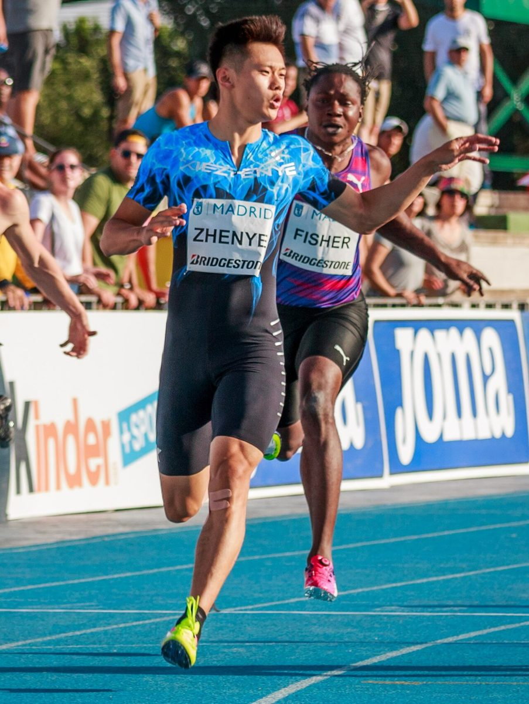

From Middle-School Backup to 9.83 Seconds: The Life and Science of Su Bingtian
Overlooked for his height as a teenager in Guangdong, Su Bingtian rebuilt his starting blocks at 25 to become the first Asian-born sprinter under 10 seconds and an Olympic finalist.

On August 1, 2021, inside Tokyo's Olympic Stadium, 31-year-old Su Bingtian exploded out of lane nine in the men's 100-metre semi-final. Su reached 30 metres in 3.73 seconds and 60 metres in 6.29 seconds—the fastest split times ever recorded under any conditions—before crossing the finish line in 9.83 seconds. The performance shaved 0.08 seconds off his previous mark, established an Asian record, and made Su the first Asian-born sprinter in 89 years to reach an Olympic men's 100-metre final, following Japan's Takayoshi Yoshioka at Los Angeles in 1932.
Su finished sixth in the Tokyo final that evening with a time of 9.98 seconds, becoming the first sprinter of non-African descent to contest an Olympic 100-metre final since Allan Wells won gold at Moscow in 1980. His semi-final mark of 9.83 seconds placed him 10th on the all-time Olympic 100-metre performance list and 19th in world track history. For an athlete who stood 1.72 metres (5 feet 8 inches) tall in an event historically led by taller sprinters, the Tokyo breakthrough was the culmination of two decades marked by technical overhaul and disciplined self-analysis.
The Zhongshan Backup Overlooked for Stature

Su was born on August 29, 1989, in Guzhen, a town in Zhongshan within Guangdong province, where his parents farmed family lands before his father worked as a security guard and his mother took employment as a nanny. Su was first exposed to track training in middle school after a physical education teacher watched the 1.50-metre-tall seventh grader leap to touch the basketball backboard. His school had no specialized sprint coaches, and Su spent his early track seasons handling equipment preparation and managerial tasks as a reserve. He did not run an official race until ninth grade, when he clocked an 11.72-second 100 metres—just 0.01 seconds slower than the district's top sprinter.
Despite that time, municipal sports school coaches repeatedly rejected Su, viewing his short stature as a disqualifying limitation. During those same middle school years in Zhongshan, Su met classmate Lin Yanfang, whom he married in 2017 and credited as his lifelong support. In 2006, Yuan Guoqiang, the head coach of the Guangdong provincial team and China's first digitally timed national 100-metre record holder from the early 1980s, evaluated Su's stride frequency and accepted him onto the provincial squad over objections from colleagues who doubted the teenager's physical potential.
Under Yuan in Guangzhou, Su won three straight 100-metre races on the 2009 Asian Grand Prix circuit and claimed 4×100-metre gold for Guangdong at the 11th National Games of China alongside Liang Jiahong and Wen Yongyi. Later in 2009, he took 60-metre gold at the Asian Indoor Games in Hanoi in 6.65 seconds and defeated Japan's Shintaro Kimura to win the East Asian Games 100-metre title in Hong Kong. Su lowered China's indoor 60-metre record to 6.56 seconds in Chengdu in March 2011, won the 2011 Asian Athletics Championships 100-metre title in Kobe in 10.21 seconds, and claimed the Chinese national title that September in Hefei with a national record of 10.16 seconds.
Switching the Starting Block Leg at Age 25

By 2013, Su faced intense domestic competition when Beijing rival Zhang Peimeng broke the national record with 10.04 seconds and lowered it to 10.00 seconds at the Moscow World Championships. Su reached the Moscow semi-finals after clocking 10.16 seconds in the heats, but a false start in the semi-final against Justin Gatlin resulted in disqualification. To accelerate international competitiveness, the Chinese Athletics Association launched an initiative in 2014 that sent national sprinters to train at IMG Academy in Bradenton, Florida, under foreign coaching oversight.
While at IMG Academy, Su worked with American coach Randy Huntington, who was then overseeing China's national long jump program. Huntington tested Su by giving him an unexpected push from behind to observe his neurological reaction; Su instinctively broke his fall with his right leg. Huntington advised Su to change his starting block lead leg from his left to his right foot to align with his natural motor pattern, aiming to sustain top-end speed past 60 metres without losing his initial explosive burst.
The technical switch initially sent Su's times backward in late 2014. Su ran 10.80 seconds over 100 metres and 6.71 seconds over 60 metres, trailing female sprinters out of the blocks in Florida training sessions. Yuan recalled that Su rehearsed his block starts while walking on sidewalks, woke up during the night to evaluate his angles, and reviewed training video into the early morning with teammate Xie Zhenye.
The adjustment yielded dividends on May 30, 2015, at the Prefontaine Classic in Eugene, Oregon. Su finished third in 9.99 seconds behind Tyson Gay and Mike Rodgers, becoming the first Asian-born sprinter to break the 10-second barrier. Three months later at the 2015 Beijing World Championships, Su repeated that 9.99-second mark in the semi-finals to reach the individual final, before taking silver in the men's 4×100-metre relay alongside Mo Youxue, Xie Zhenye, and Zhang Peimeng in 38.01 seconds.
Birmingham Silver, Olympic Relocation and Jinan University
Su reached his competitive peak in 2018. At the World Indoor Championships in Birmingham that March, he claimed silver in the 60 metres with an Asian indoor record of 6.42 seconds behind Christian Coleman. Su matched the Asian outdoor record of 9.91 seconds twice in Madrid and Paris that June, before winning 100-metre gold at the Jakarta Asian Games in August with a Games record of 9.92 seconds.
Following his 9.83-second semi-final in Tokyo on August 1, 2021, Su joined Xie Zhenye, Wu Zhiqiang, and Tang Xingqiang in the 4×100-metre relay final five days later, finishing fourth in a national-record-equaling 37.79 seconds. In February 2022, Great Britain's CJ Ujah tested positive for banned substances, leading the Court of Arbitration for Sport to disqualify the British relay team. The International Olympic Committee formally reallocated the bronze medals to China on May 19, 2022, and Su received his Olympic bronze medal at Hangzhou Olympic Stadium on October 4, 2023.
Off the track, Su earned a master's degree in international economy and trade at Guangzhou's Jinan University in 2017 and joined the faculty as an associate professor, later authoring peer-reviewed academic papers that examined kinematic data from his own stride cadence and block mechanics. He eventually became dean of Jinan University's School of Physical Education. On November 20, 2025, at age 36, Su ran the final race of his career leading off Guangdong's 4×100-metre relay team at the 15th National Games in Guangzhou, removing his track spikes before the home crowd before announcing his competitive retirement on December 9, 2025.